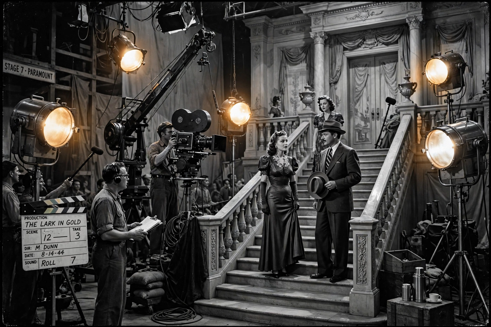

| Classical Hollywood cinema | |
|---|---|
| Years active | c. 1910s – 1960s (Golden Age c. late 1920s – late 1950s) |
| Country | United States |
| Major figures | D. W. Griffith, John Ford, Howard Hawks, Alfred Hitchcock, Billy Wilder |
| Influences | Melodrama, vaudeville, 19th-century novel |
| Influenced | New Hollywood, global commercial cinema |
Classical Hollywood cinema is a term used in film criticism to describe both a narrative and visual style of filmmaking that first developed in the 1910s to 1920s during the later years of the silent film era. It then became characteristic of American cinema during the Golden Age of Hollywood, from about the late 1920s (with the advent of sound film) to the late 1950s. It eventually became the most powerful and pervasive style of filmmaking worldwide.
The classical style prioritises clear, linear storytelling driven by goal-oriented protagonists. Continuity editing renders the technique "invisible": cuts preserve spatial and temporal coherence through devices such as the 180-degree rule, shot/reverse-shot, and eyeline matches. Narrative follows a cause-and-effect chain structured in three acts, typically resolved with closure. Film scholar David Bordwell, Janet Staiger, and Kristin Thompson codified the concept in The Classical Hollywood Cinema (1985).
Production was organised under the studio system, dominated by the "Big Five" majors — Paramount, MGM, Warner Bros., 20th Century Fox, and RKO — and the "Little Three". Studios employed stars, directors, and crews under long-term contracts and owned theatre chains until the 1948 Paramount Decrees. Output was shaped by genre conventions and the Production Code (Hays Code), enforced from 1934.
Television competition, suburbanisation, antitrust rulings, and the blacklist era eroded the system through the 1950s; by the 1960s the classical model gave way to the looser "New Hollywood" of the late 1960s and 1970s. Its narrative grammar nevertheless remains the default template of mainstream filmmaking.
Cinema of the United States · Studio system · D. W. Griffith